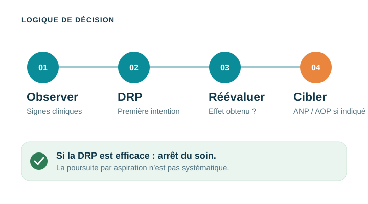
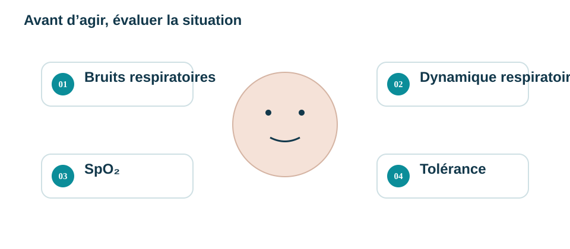
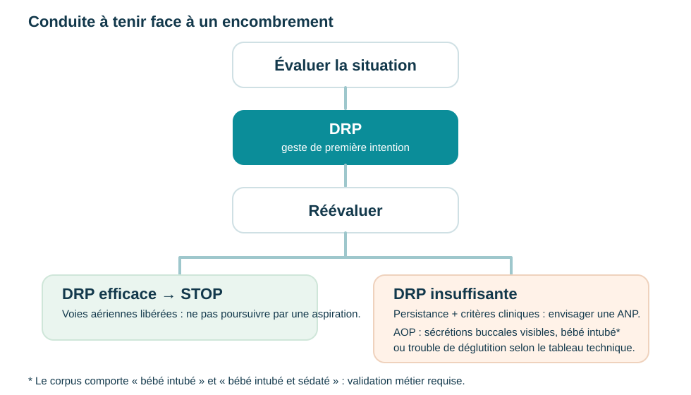
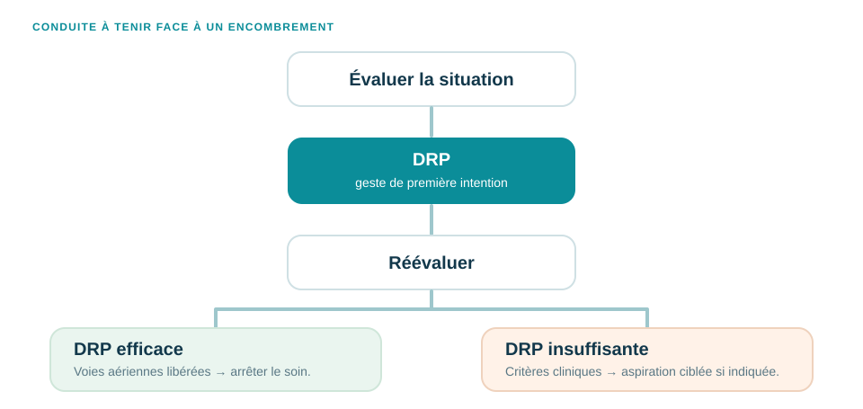
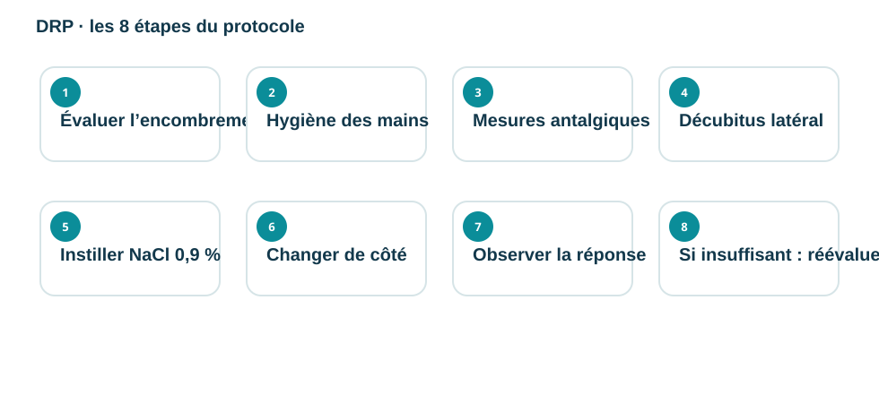

Un nouveau-né est encombré.
Faut-il aspirer ?
Pas toujours. Vous allez vous entraîner à observer la situation, choisir le geste adapté, le réaliser en sécurité et savoir quand vous arrêter.

L’aspiration est un geste ciblé, non systématique. La décision vient après l’observation et la réévaluation.
À qui s'adresse ce parcours ?
Médecine et réanimation néonatale du CHT Gaston Bourret.
Personnel infirmier et infirmier puériculteur intervenant auprès des nouveau-nés hospitalisés dans le service.
Finalité
Encadrer la DRP, l'ANP et/ou l'AOP chez le nouveau-né hospitalisé : des gestes ciblés, non systématiques, réalisés en sécurité et dans le respect du confort de l'enfant, conformément aux recommandations en vigueur mentionnées dans le protocole.
Un nouveau-né semble encombré
Quelle est votre première intervention ?
Que devez-vous évaluer ?

Trois gestes, trois définitions
Désobstruction rhino-pharyngée : instillation de sérum physiologique destinée à fluidifier et drainer les sécrétions nasales. Geste préalable à toute aspiration.
Aspiration naso-pharyngée : aspiration par pression négative des sécrétions présentes dans le nasopharynx à l'aide d'une sonde stérile, lorsque le prématuré ne peut les éliminer seul.
Aspiration oropharyngée : aspiration par pression négative des sécrétions présentes dans la bouche à l'aide d'une sonde stérile, lorsque le prématuré ne peut les éliminer seul.
Abréviations
CH : Charrière - unité de mesure du diamètre des sondes. FC : fréquence cardiaque. SpO₂ : saturation pulsée en oxygène.
L'ANP n'est pas un soin systématique

Chaque aspiration inutile expose à des risques
L'objectif n'est donc pas « d'aspirer par habitude », mais de décider selon la situation clinique.
L'algorithme complet

Encombrement persistant après DRP, avec bruits respiratoires anormaux audibles et/ou signes cliniques tels que désaturation, bradycardie ou lutte respiratoire, en lien avec un obstacle mécanique non résolu.
L'algorithme mentionne : bébé intubé ou sécrétions buccales visibles.
Cohérence du protocole à confirmerLe tableau technique mentionne par ailleurs « bébé intubé et sédaté » et le trouble de la déglutition.
Le matériel nécessaire
Sélectionnez tous les éléments attendus.
Régler la pression d'aspiration
Prématuré : 80 à 105 mbar
Nouveau-né à terme : 105 à 130 mbar
Limite maximale absolue : ≤ 150 mbar
Durée maximale du geste : 5 à 10 s chez le prématuré
Préparer l'enfant et sécuriser le contexte
Remettez les huit étapes dans l'ordre

Instillation et drainage : formulation source
Ce repère est conservé tel qu’il figure dans le corpus. Le terme « souris » reste à préciser par l’équipe métier avant diffusion apprenant.
Validation métier en coursLa DRP a été efficace
Les voies aériennes sont libérées et le nouveau-né respire correctement. Que faites-vous ?
Cette fois, la DRP ne suffit pas
L'encombrement persiste. Le protocole cite notamment : SpO₂ < 88 %, bradycardie, signes de lutte, bouchon muqueux visible ou audible.
Quel geste peut alors être envisagé ?
Avant d'introduire la sonde
Ne pas aspirer sans indication.
2. Rassembler le matérielVérifier la pression de l'aspiration murale.
3. Hygiène des mainsSHA, gants non stériles, sonde adaptée au poids de l'enfant.
Succion non nutritive (tétine G30), emmaillotage, voix douce, deuxième personne.
5. PositionnementDécubitus dorsal, tête en légère extension (position neutre). Maintenir fermement mais sans forcer.
Réaliser une ANP

De l'aile du nez au coin interne de l'œil ; si insuffisant, du bout du nez au lobe de l'oreille, longueur à ne jamais dépasser. Mettre un repère sur la sonde.
Après quelques gouttes de NaCl 0,9 %, introduire sans aspirer, doucement, perpendiculairement au visage, selon le plancher de la cavité nasale, jusqu'au repère. Ne jamais forcer.
Aspirer uniquement au retrait , lent et progressif. Durée totale : 5 à 10 secondes maximum. Ne pas réintroduire la sonde immédiatement.
Réaliser une AOP
Sécrétions visibles dans la bouche, bébé intubé et sédaté, ou bébé présentant un trouble de la déglutition.

Prévenir le bébé par une stimulation à l'oralité avec la sonde. Introduire sans aspirer, doucement, en débutant par l'intérieur des joues et, si nécessaire, jusqu'à l'arrière-gorge en évitant le réflexe nauséeux. Aspirer uniquement au retrait, lent et progressif.
Durée totale : 5 à 10 secondes maximum. Ne pas réintroduire la sonde immédiatement.
Surveiller et savoir s'arrêter
Surveiller en continu : FC, SpO₂, coloration et tonus . O₂ de secours à portée de main.
Trois situations à retenir
Privilégier la réalisation du soin avant les alimentations.
Ne pas réaliser de gazométrie immédiatement après l'ANP.
En cas de doute, de malformation ORL, pneumothorax… discuter avec le médecin et faire préciser la conduite à tenir par prescription médicale.
Confort et traçabilité
Situation clinique finale
Huit décisions successives permettent de vérifier le raisonnement professionnel, depuis l'observation jusqu'aux actions après le geste.
L'essentiel à retenir
Observer → DRP → réévaluer → arrêter si efficace → aspiration ciblée si nécessaire → surveiller → tracer.
Ressources
Fiche réflexe PDF Protocole complet Matrice de couverture exhaustive v3Documents associés mentionnés dans le protocole
- Protocole de gestion de la douleur néonatologie (G30 %)
- Affiche G30-SPEC-NEO-DO-45-2
- Recommandation des pratiques en soins de développement - service de néonatologie
Documents de référence mentionnés dans le protocole
- Pediadol – Aspirations des voies aériennes : recommandations sur la douleur procédurale pédiatrique (pediadol.org)
- CHUV désencombrement nasal chez l’enfant de 0-18ans.
- CHU Sainte-Justine : prélèvement des sécrétions des voix aériennes via l’éprouvette « luki » et prélèvement par aspiration des sécrétions nasopharyngées.
- Université Claude Bernard Lyon : Mémoire sur l’ORALITE DU NOUVEAU NE PREMATURE EN SERVICE DE NEONNATALOGIE
- AKCR : Intérêt des aspirations nasopharyngés dans le désencombrement du nouveau-né et du nourrisson
- Hôpitaux Universitaires de Genève : Technique Clinique relative au désencombrement rhino-pharyngé avec le système « mouche bébé »
- Revue Respiratory Care février 2022 : AARC clinical practice Guidelines : Artificial Airway Suctioning